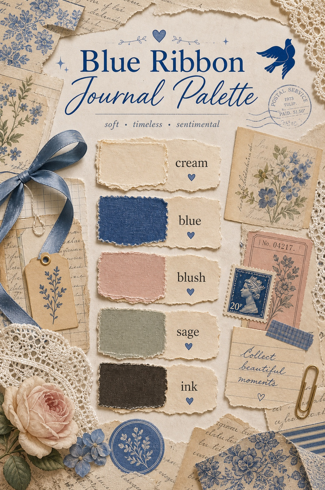
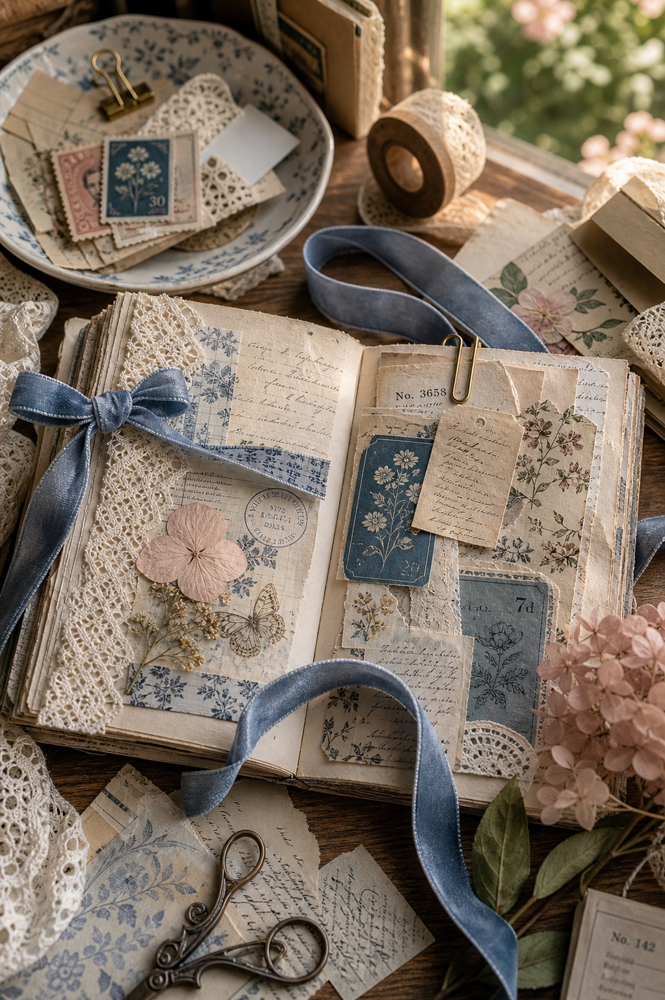

Blue can make a journal page feel calmer immediately. It gives cream paper and old scraps a little structure, especially when the page is becoming too warm or too busy.

Let Blue Be the Thread
Use blue as the thing that repeats: a ribbon, a strip of paper, a botanical stamp, a tiny label, or one small flower. The repeat is what makes the page feel designed.

Keep the Rest Quiet
Cream, blush, sage, and ink brown let the blue stay special. If every color shouts, the ribbon stops feeling like the thread.
Add Printable Pages at the End
For a ready-made base, use romantic printable pages that already carry soft florals, aged paper, and gentle contrast.